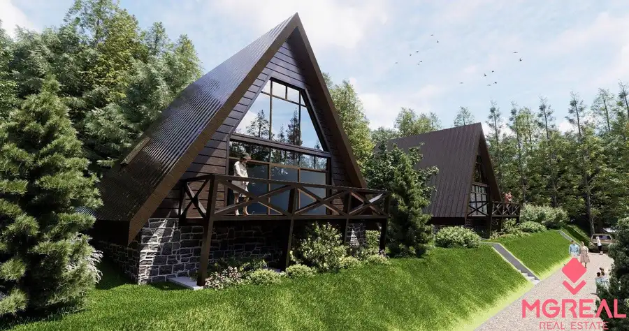
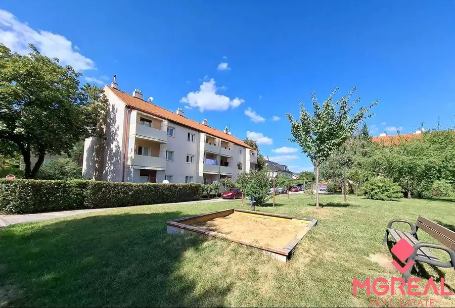
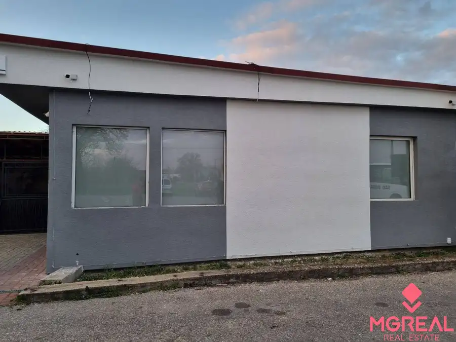

Investičná budova /dom/ v Komjaticiach
Komjatice
- Stavpo rekonštrukcii
- Vlastníctvoosobné
O nehnuteľnosti
Budova stojí na pozemku vo výmere 268 m² a sa skladá z dvoch nadzemných podlaží:
1. NP: 84,90 m² /chodba, 3 izby, kuchyňa, kúpeľňa, WC/
2. NP: 86,20 m² /3 izby, kuchyňa, kúpeľňa, WC + sklad so sprchou a WC/
Budova je vhodné na podnikateľské účely - momentálne využívaná ako kancelárske priestory + ubytovňa alebo sa dá preklasifikovať do dom s dvomi bytovými jednotkami alebo môže slúžiť ako dvojgeneračný dom.
Inžinierske siete + ostatné vybavenie:
- elektrina, plyn, obecná voda, studňa, žumpa, kamerový systém, optický internet, vyhradené parkovanie.
Obec Komjatice má kompletnú občiansku vybavenosť a výbornú dostupnosť do miest ako Nitra a Nové Zámky.
V cene je zahrnutý kompletný právny servis. Kúpa je možná v hotovosti ale aj formou hypotekárneho úveru, s ktorým Vám radi pomôžeme.
Parametre
| Poschodie | neuvedené |
|---|---|
| Vlastníctvo | osobné |
| Stav | po rekonštrukcii |
| El. napätie | nie |
| Plyn | nie |
| Kúpeľňa | nie |
| Vykurovanie | nie |
| Balkón | nie |
| Lódžia | nie |
| Terasa | nie |
| Pivnica | nie |
| Garáž | nie |
| Krb | nie |
| Klimatizácia | nie |
| Káblová televízia | nie |
| Energetický certifikát | nie |
| Predzáhradka | nie |
| Dátum zverejnenia | 7. 9. 2025 |
Kde to je
Mohlo by Vás zaujímať

Chaty a chalupy9 48 000 €Na predaj 2 rozostavané chaty - Kokava nad Rimavicou Kokava nad Rimavicou 100 m² Ponúkame Vám na predaj 2 samostatné rozostavané rekreačné chaty v nádhernom prostredí v katastrálnom území Kokava nad Rimavicou (okres Poltár).…
Byt9 143 000 €Predaj 2-izbového bytu v lukratívnej lokalite – Nitra, ulica 8. Mája Nitra 2-izbový48.52 m²3. podlažie Hľadáte bývanie v príjemnej lokalite s kompletnou občianskou vybavenosťou a možnosťou prerobiť si byt podľa vlastných predstáv? Ponúkame Vám na…
Nebytové priestory9 127 900 €Obchodný priestor /bar, kaviareň, herňa.../ Komjatice Komjatice 100 m² Ponúkame Vám na predaj prevádzkový priestor v Komjaticiach, ktorý je vhodný pre prevádzkovanie baru, kaviarne, herne alebo bufetu. Objekt je…